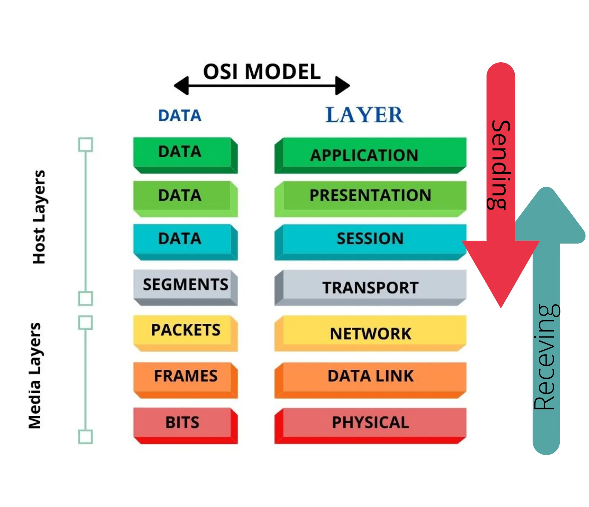

Az OSI modell
7., Alkalmazási réteg: A felhasználói alkalmazások hálózati szolgáltatásait biztosítja, például HTTP, DNS, FTP, SMTP.
6., Megjelenítési réteg: Az adatok formátumával foglalkozik, például kódolás, tömörítés és titkosítás/dekódolás.
5., Viszonyi réteg: A kommunikációs munkamenetek létrehozását, fenntartását és lezárását kezeli két végpont között.
4., Szállítási réteg: A végpontok közötti adatátvitelt biztosítja; ide tartozik például a TCP és az UDP, valamint a portszámok.
3., Hálózati réteg: A logikai címzéssel és az útválasztással foglalkozik. Ide tartozik például az IP és a routerek működése.
2., Adatkapcsolati réteg: A helyi hálózaton történő keretátvitelt és MAC-címzést kezeli. Ide tartozik például az Ethernet és a switch.
1., Fizikai réteg: Az adatokat bitek formájában továbbítja a fizikai közegen, például kábelen, optikai szálon vagy rádióhullámokon.
